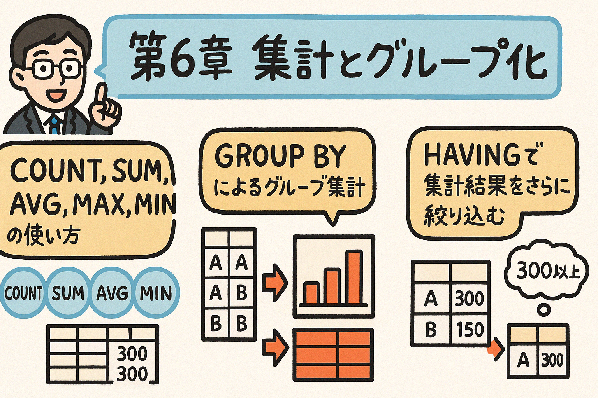

この第6章では、SQLを使ったデータの集計とグループ化について学習します。COUNT、SUM、AVG、MAX、MINといった集計関数の使い方から、GROUP BY句を使ったグループ集計、HAVING句による絞り込みまで、データ分析の基礎となる重要な概念を解説します。
データベースに格納された大量のデータから意味のある情報を抽出するためには、データを集計して分析することが不可欠です。SQLの集計関数とGROUP BY句を使うことで、データの合計、平均、最大値、最小値などを効率的に計算できます。この章では、PostgreSQLでの集計クエリの書き方を詳しく学んでいきましょう。
集計関数は、複数の行から単一の結果値を計算するSQLの関数です。PostgreSQLでは、以下の主要な集計関数が用意されています：
指定された条件に一致する行の数をカウントします。
構文: COUNT(式)
指定された列の値の合計を計算します。
構文: SUM(式)
指定された列の値の平均を計算します。
構文: AVG(式)
指定された列の最大値を返します。
構文: MAX(式)
指定された列の最小値を返します。
構文: MIN(式)
以下のサンプルテーブル「products」を使って、各集計関数の使い方を見ていきましょう。
| product_id | product_name | category_id | price | stock |
|---|---|---|---|---|
| 1 | ノートパソコン | 1 | 85000 | 10 |
| 2 | デスクトップPC | 1 | 120000 | 5 |
| 3 | スマートフォン | 2 | 75000 | 15 |
| 4 | タブレット | 2 | 45000 | 8 |
| 5 | ワイヤレスイヤホン | 3 | 15000 | 20 |
| 6 | Bluetoothスピーカー | 3 | 8000 | 12 |
| category_id | category_name |
|---|---|
| 1 | コンピュータ |
| 2 | モバイルデバイス |
| 3 | オーディオ機器 |
テーブル内の商品数をカウントします：
SELECT COUNT(*) AS 商品数
FROM products;
| 商品数 |
|---|
| 6 |
特定のカテゴリの商品数をカウントします：
SELECT COUNT(*) AS モバイルデバイス数
FROM products
WHERE category_id = 2;
| モバイルデバイス数 |
|---|
| 2 |
すべての商品の在庫数の合計を計算します：
SELECT SUM(stock) AS 総在庫数
FROM products;
| 総在庫数 |
|---|
| 70 |
在庫価値（価格 × 在庫数）の合計を計算します：
SELECT SUM(price * stock) AS 総在庫価値
FROM products;
| 総在庫価値 |
|---|
| 2776000 |
商品の平均価格を計算します：
SELECT AVG(price) AS 平均価格
FROM products;
| 平均価格 |
|---|
| 58000 |
小数点以下2桁までの平均価格を表示します：
SELECT ROUND(AVG(price), 2) AS 平均価格
FROM products;
| 平均価格 |
|---|
| 58000.00 |
最も高価な商品と最も安価な商品の価格を調べます：
SELECT MAX(price) AS 最高価格, MIN(price) AS 最低価格
FROM products;
| 最高価格 | 最低価格 |
|---|---|
| 120000 | 8000 |
在庫が最も多い商品と最も少ない商品の在庫数を調べます：
SELECT MAX(stock) AS 最大在庫数, MIN(stock) AS 最小在庫数
FROM products;
| 最大在庫数 | 最小在庫数 |
|---|---|
| 20 | 5 |
以下の問題に対するSQLクエリを作成してみましょう：
ヒント: WHERE句を使って条件を指定してから集計関数を適用します。
GROUP BY句を使うと、指定した列の値でデータをグループ化し、各グループに対して集計関数を適用できます。これにより、カテゴリごとの合計や平均など、より詳細な分析が可能になります。
SELECT column1, column2, ..., 集計関数(column)
FROM table_name
[WHERE condition]
GROUP BY column1, column2, ...
[ORDER BY column];
各カテゴリに含まれる商品の数をカウントします：
SELECT category_id, COUNT(*) AS 商品数
FROM products
GROUP BY category_id
ORDER BY category_id;
| category_id | 商品数 |
|---|---|
| 1 | 2 |
| 2 | 2 |
| 3 | 2 |
カテゴリ名と商品数を表示するには、JOINを使用します：
SELECT c.category_name, COUNT(*) AS 商品数
FROM products p
JOIN categories c ON p.category_id = c.category_id
GROUP BY c.category_name
ORDER BY c.category_name;
| category_name | 商品数 |
|---|---|
| オーディオ機器 | 2 |
| コンピュータ | 2 |
| モバイルデバイス | 2 |
各カテゴリの総在庫数と平均価格を計算します：
SELECT c.category_name,
SUM(p.stock) AS 総在庫数,
AVG(p.price) AS 平均価格
FROM products p
JOIN categories c ON p.category_id = c.category_id
GROUP BY c.category_name
ORDER BY c.category_name;
| category_name | 総在庫数 | 平均価格 |
|---|---|---|
| オーディオ機器 | 32 | 11500 |
| コンピュータ | 15 | 102500 |
| モバイルデバイス | 23 | 60000 |
カテゴリと価格帯（5万円以上/未満）でグループ化した商品数：
SELECT c.category_name,
CASE WHEN p.price >= 50000 THEN '高価格' ELSE '低価格' END AS 価格帯,
COUNT(*) AS 商品数
FROM products p
JOIN categories c ON p.category_id = c.category_id
GROUP BY c.category_name,
CASE WHEN p.price >= 50000 THEN '高価格' ELSE '低価格' END
ORDER BY c.category_name, 価格帯;
| category_name | 価格帯 | 商品数 |
|---|---|---|
| オーディオ機器 | 低価格 | 2 |
| コンピュータ | 高価格 | 2 |
| モバイルデバイス | 低価格 | 1 |
| モバイルデバイス | 高価格 | 1 |
図6.1: GROUP BYによるデータのグループ化と集計
以下の問題に対するSQLクエリを作成してみましょう：
WHERE句はグループ化の前に行を絞り込むのに対し、HAVING句はグループ化と集計が行われた後の結果をフィルタリングするために使用されます。集計関数の結果に基づいて条件を指定する場合は、HAVING句を使う必要があります。
SELECT column1, column2, ..., 集計関数(column)
FROM table_name
[WHERE condition]
GROUP BY column1, column2, ...
HAVING 集計関数の条件
[ORDER BY column];
| WHERE | HAVING |
|---|---|
| グループ化の前に行をフィルタリング | グループ化の後に結果をフィルタリング |
| 集計関数を条件に使用できない | 集計関数を条件に使用できる |
| 元のデータの行に対して条件を適用 | 集計結果のグループに対して条件を適用 |
平均価格が50,000円を超えるカテゴリを検索します：
SELECT c.category_name, AVG(p.price) AS 平均価格
FROM products p
JOIN categories c ON p.category_id = c.category_id
GROUP BY c.category_name
HAVING AVG(p.price) > 50000
ORDER BY 平均価格 DESC;
| category_name | 平均価格 |
|---|---|
| コンピュータ | 102500 |
| モバイルデバイス | 60000 |
商品数が1つより多いカテゴリのみ表示します：
SELECT c.category_name, COUNT(*) AS 商品数
FROM products p
JOIN categories c ON p.category_id = c.category_id
GROUP BY c.category_name
HAVING COUNT(*) > 1;
| category_name | 商品数 |
|---|---|
| オーディオ機器 | 2 |
| コンピュータ | 2 |
| モバイルデバイス | 2 |
総在庫価値が300,000円を超え、かつ平均価格が20,000円以上のカテゴリを検索します：
SELECT c.category_name,
SUM(p.price * p.stock) AS 総在庫価値,
AVG(p.price) AS 平均価格
FROM products p
JOIN categories c ON p.category_id = c.category_id
GROUP BY c.category_name
HAVING SUM(p.price * p.stock) > 300000 AND AVG(p.price) >= 20000
ORDER BY 総在庫価値 DESC;
| category_name | 総在庫価値 | 平均価格 |
|---|---|---|
| コンピュータ | 1450000 | 102500 |
| モバイルデバイス | 1125000 + 360000 = 1485000 | 60000 |
同じクエリ内でWHERE句とHAVING句を併用することも可能です。例えば、以下のクエリは50,000円以上の商品のみを対象とし（WHERE句）、その中で合計在庫数が10を超えるカテゴリのみを表示します（HAVING句）：
SELECT c.category_name, SUM(p.stock) AS 総在庫数
FROM products p
JOIN categories c ON p.category_id = c.category_id
WHERE p.price >= 50000
GROUP BY c.category_name
HAVING SUM(p.stock) > 10;
以下の問題に対するSQLクエリを作成してみましょう：
集計結果を意味のある方法で並べ替えることで、データの傾向や重要な情報をより明確に把握できます。ORDER BY句を使用して、集計結果を様々な方法で並べ替えることができます。
カテゴリ別の平均価格を高い順に並べ替えます：
SELECT c.category_name, AVG(p.price) AS 平均価格
FROM products p
JOIN categories c ON p.category_id = c.category_id
GROUP BY c.category_name
ORDER BY 平均価格 DESC;
| category_name | 平均価格 |
|---|---|
| コンピュータ | 102500 |
| モバイルデバイス | 60000 |
| オーディオ機器 | 11500 |
商品数が多い順にカテゴリを並べ替えます：
SELECT c.category_name, COUNT(*) AS 商品数
FROM products p
JOIN categories c ON p.category_id = c.category_id
GROUP BY c.category_name
ORDER BY 商品数 DESC;
| category_name | 商品数 |
|---|---|
| オーディオ機器 | 2 |
| コンピュータ | 2 |
| モバイルデバイス | 2 |
複数の条件で並べ替えます（まず商品数、次に平均価格）：
SELECT c.category_name,
COUNT(*) AS 商品数,
AVG(p.price) AS 平均価格
FROM products p
JOIN categories c ON p.category_id = c.category_id
GROUP BY c.category_name
ORDER BY 商品数 DESC, 平均価格 DESC;
| category_name | 商品数 | 平均価格 |
|---|---|---|
| コンピュータ | 2 | 102500 |
| モバイルデバイス | 2 | 60000 |
| オーディオ機器 | 2 | 11500 |
ORDER BY句で直接集計関数を使うこともできます：
SELECT c.category_name
FROM products p
JOIN categories c ON p.category_id = c.category_id
GROUP BY c.category_name
ORDER BY SUM(p.price * p.stock) DESC;
| category_name |
|---|
| モバイルデバイス |
| コンピュータ |
| オーディオ機器 |
例: ORDER BY 平均価格 DESC NULLS LAST
PostgreSQLは、基本的な集計関数に加えて、より高度なデータ分析を行うための機能を提供しています。ここでは、よく使用される高度な集計テクニックをいくつか紹介します。
DISTINCTキーワードを使用すると、重複を除いた一意の値のみを集計対象にできます：
SELECT COUNT(DISTINCT category_id) AS 一意のカテゴリ数
FROM products;
| 一意のカテゴリ数 |
|---|
| 3 |
CASE式を集計関数と組み合わせると、条件付きの集計が可能になります：
SELECT
SUM(CASE WHEN price < 20000 THEN 1 ELSE 0 END) AS 低価格商品数,
SUM(CASE WHEN price >= 20000 AND price < 80000 THEN 1 ELSE 0 END) AS 中価格商品数,
SUM(CASE WHEN price >= 80000 THEN 1 ELSE 0 END) AS 高価格商品数
FROM products;
| 低価格商品数 | 中価格商品数 | 高価格商品数 |
|---|---|---|
| 2 | 2 | 2 |
SELECT c.category_name,
SUM(CASE WHEN p.price < 20000 THEN 1 ELSE 0 END) AS 低価格商品数,
SUM(CASE WHEN p.price >= 20000 AND p.price < 80000 THEN 1 ELSE 0 END) AS 中価格商品数,
SUM(CASE WHEN p.price >= 80000 THEN 1 ELSE 0 END) AS 高価格商品数
FROM products p
JOIN categories c ON p.category_id = c.category_id
GROUP BY c.category_name
ORDER BY c.category_name;
| category_name | 低価格商品数 | 中価格商品数 | 高価格商品数 |
|---|---|---|---|
| オーディオ機器 | 2 | 0 | 0 |
| コンピュータ | 0 | 0 | 2 |
| モバイルデバイス | 0 | 2 | 0 |
集計結果をさらに集計したい場合は、サブクエリやCTE（Common Table Expression）を使用します：
WITH カテゴリ別集計 AS (
SELECT c.category_id, c.category_name, AVG(p.price) AS 平均価格
FROM products p
JOIN categories c ON p.category_id = c.category_id
GROUP BY c.category_id, c.category_name
)
SELECT AVG(平均価格) AS 全カテゴリの平均価格
FROM カテゴリ別集計;
| 全カテゴリの平均価格 |
|---|
| 58000 |
集計関数はNULL値を無視します。これが意図しない結果を生むこともあるため、必要に応じてCOALESCE関数などでNULL値を置き換えることができます：
SELECT
AVG(price) AS 通常の平均価格,
AVG(COALESCE(price, 0)) AS NULL値を0として計算した平均価格
FROM products;
例: SELECT STRING_AGG(product_name, ', ') FROM products;
以下の問題に対するSQLクエリを作成してみましょう：
ここでは、これまで学んだ知識を活用して、「商品カテゴリごとの平均価格を求める」という課題に取り組みます。
以下のテーブルがあるとします：
以下の問題に対するSQLクエリを作成してください：
SELECT c.category_name, AVG(p.price) AS 平均価格
FROM products p
JOIN categories c ON p.category_id = c.category_id
GROUP BY c.category_name
ORDER BY 平均価格 DESC;
SELECT c.category_name, AVG(p.price) AS 平均価格
FROM products p
JOIN categories c ON p.category_id = c.category_id
GROUP BY c.category_name
HAVING AVG(p.price) > 40000
ORDER BY 平均価格 DESC;
SELECT
c.category_name,
COUNT(*) AS 商品数,
AVG(p.price) AS 平均価格,
MAX(p.price) AS 最高価格,
MIN(p.price) AS 最低価格
FROM products p
JOIN categories c ON p.category_id = c.category_id
GROUP BY c.category_name
ORDER BY 平均価格 DESC;
SELECT
parent.category_name AS 親カテゴリ,
child.category_name AS 子カテゴリ,
AVG(p.price) AS 平均価格
FROM products p
JOIN categories child ON p.category_id = child.category_id
JOIN categories parent ON child.parent_category_id = parent.category_id
GROUP BY parent.category_name, child.category_name
ORDER BY 親カテゴリ, 平均価格 DESC;
SELECT
c.category_name,
SUM(p.price * s.quantity) AS 総売上金額,
AVG(p.price) AS 平均単価
FROM sales s
JOIN products p ON s.product_id = p.product_id
JOIN categories c ON p.category_id = c.category_id
WHERE s.sale_date >= CURRENT_DATE - INTERVAL '3 months'
GROUP BY c.category_name
ORDER BY 総売上金額 DESC;
以下の問題に答えて、第6章の内容の理解度を確認しましょう。
問題1: 次のうち、NULLを含む行をカウントするために使用する正しいSQLは？
問題2: GROUP BY句に含まれていない列名をSELECT句に含めると、どうなりますか？
問題3: 次のうち、集計関数を条件として使用できるSQLの句はどれですか？
問題4: 集計関数がNULL値を処理する方法について、正しい説明はどれですか？
問題5: 次のSQLクエリの結果として正しいものはどれですか？
SELECT category_id, AVG(price) FROM products GROUP BY category_id HAVING COUNT(*) > 1;
この章では、SQLの集計関数とグループ化について学びました。これらの技術を使うことで、大量のデータから意味のある情報を抽出し、データ駆動型の意思決定に役立てることができます。
練習問題に取り組むことで、これらの概念をしっかりと身につけましょう。実際のデータベースやデータセットを使った実践的な演習も非常に効果的です。
次の章では以下のトピックを学習します：